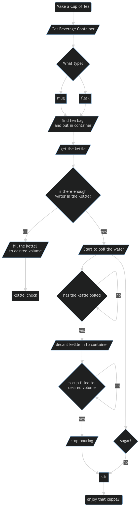

Flow Charts and Diagrams
In this lab you are going practice building flow charts and diagrams as a way to map how an alogrithm will work.
You will need to navigate to https://mermaid-js.github.io/mermaid/#/ to complete this lab.
- Remember to refer to documentation of a tool you are using to understand how to use it...
- https://mermaid-js.github.io/mermaid/#/flowchart
1. Design an alogrithm or flow process for making a hot drink
flowchart TD
start(Make a Cup of Tea)
stop(enjoy that cuppa?!)
get_beverage_container[/Get Beverage Container/]
container_type{What type?}
mug[mug]
flask[flask]
teabag[/find tea bag \n and put in container/]
sugar{sugar?}
get_kettle[/get the kettle/]
kettle_volume_check{is there enough \n water in the Kettle?}
fill_kettle[/fill the kettel \n to desired volume/]
turn_kettle_on[/Start to boil the water/]
boiled{has the kettle boiled}
start_pour[/decant kettle in to container/]
container_cap{is cup filled to \n desired volume}
end_pour[/stop pouring/]
start --> get_beverage_container --> container_type
container_type --> mug
container_type --> flask
mug & flask --> teabag --> get_kettle --> kettle_volume_check
kettle_volume_check -- no --> fill_kettle --> kettle_check
kettle_volume_check -- yes --> turn_kettle_on --> boiled
boiled -- no --> boiled -- yes --> start_pour
start_pour --> container_cap -- no --> container_cap -- yes --> end_pour
end_pour --> stir
turn_kettle_on --> sugar -- no --> stir --> stop
The Output
